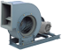
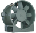
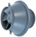
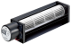

2023年
問題72 送風機に関する次の記述のうち，最も不適当なものはどれか．
（1）送風機は，吐出圧力の大きさに応じてファンとブロワに分類され，空気調和用の送風機はファンに属する．
（2）遠心式送風機では，空気が軸方向から入り，軸に対して傾斜して通り抜ける．
（3）送風系の抵抗曲線は，ダクトの形状やダンバの開度が変わると変化する．
（4）軸流式送風機は，空気が羽根車の中を軸方向から入り，軸方向に通り抜ける．
（5）横流式送風機は，空気が羽根車の外周の一部から入り，反対側の外周の一部へ通り抜ける．
2023年
問題72 正解（2） 頻出度AAA
遠心式送風機では，空気が軸方向から入り，軸に対して直角に通り抜ける．軸に対して傾斜して通り抜ける．のは斜流送風機である．
羽根車と気流の様子は2023-72-1図参照．
出典 三菱電機
https://www.mitsubishielectric.co.jp/ldg/ja/air/guide/support/knowledge/detail_03.html を基に作成
送風機の種類を大別すると遠心式送風機，軸流式送風機，斜流式送風機，横流式送風機に分けることができる（2023-71-2図～2023-71-5図参照）．

出典 テラル株式会社
https://www.teral.net/products/search/type?kishu=25300

出典 ミツヤ送風機株式会社
https://www.mitsuyaj.co.jp/products/axial_flow/axial_flow_ap.html

出典 テラル株式会社
https://www.teral.net/products/search/type?kishu=550630

出典 オリエンタルモーター株式会社
https://www.orientalmotor.co.jp/ja/products/fan-motors/mfd
-(1) 送風機は，圧力98kPa以上のものをブロワ，それより低い圧力のものをファンと呼ぶ．空気調和用に使用される送風機は，ほとんどが1.5kPa以下のファンである．
-(3) 送風機の運転について，横軸に風量，縦軸に静圧とり，合わせて軸動力，効率，騒音等を示したグラフを特性曲線図又は性能曲線図という．
特性曲線図はメーカーのカタログなどで手に入るので，送風機が設置されるダクト系の抵抗曲線(風量－圧力損失曲線)を書き入れると，送風機の運転点が分かるので送風機の選定に利用する（2023-72-6図参照）．

ダクトの抵抗による圧力損失はダクトの長さ，径の大きさや曲がりの有無などによって変化するが，いずれも風速(風量)の2乗に比例するので，抵抗曲線は，原点を通る2次曲線となる．
その送風量が設計風量よりも大きいことが判明した場合には，送風系のダンパを操作してR→R’とすることで，簡便に設計風量と同一となるように調整することができる（2023-72-7図参照）．